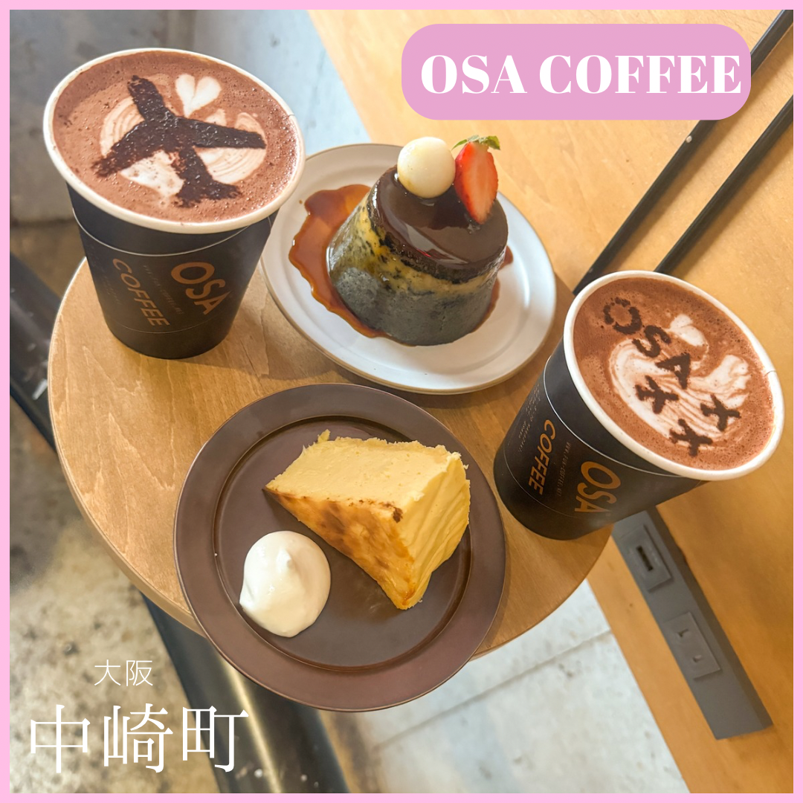
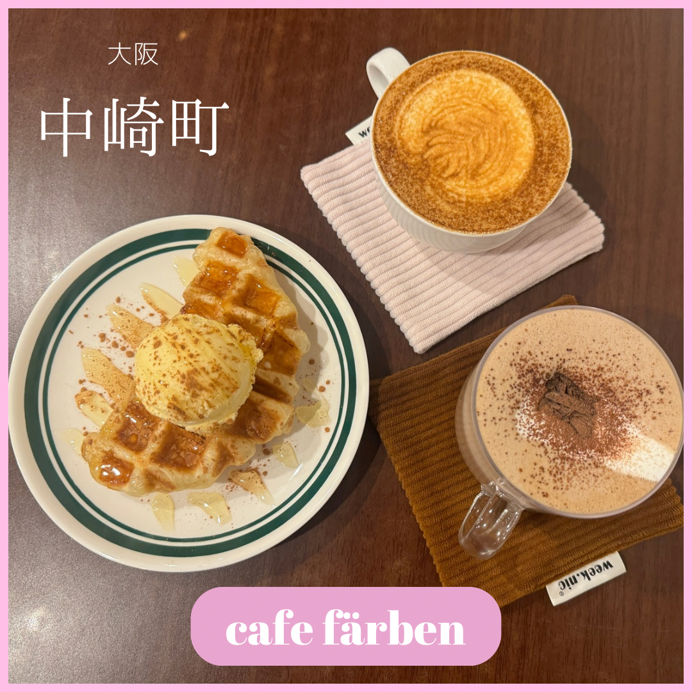
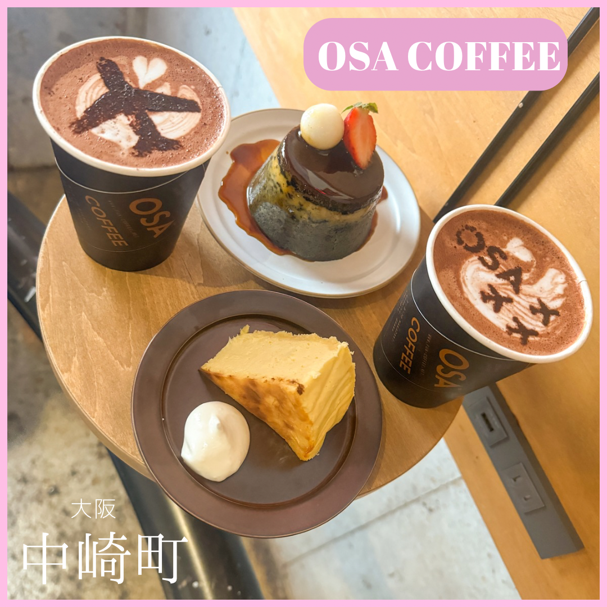
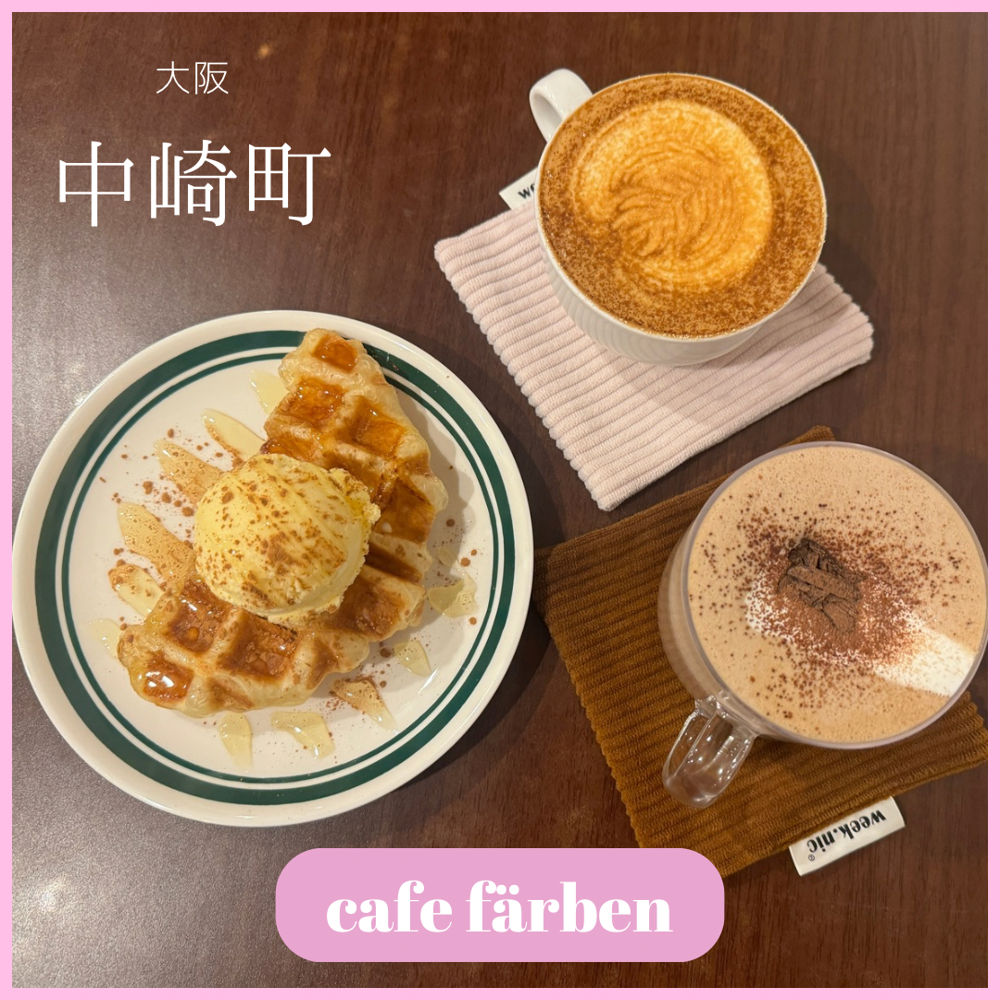
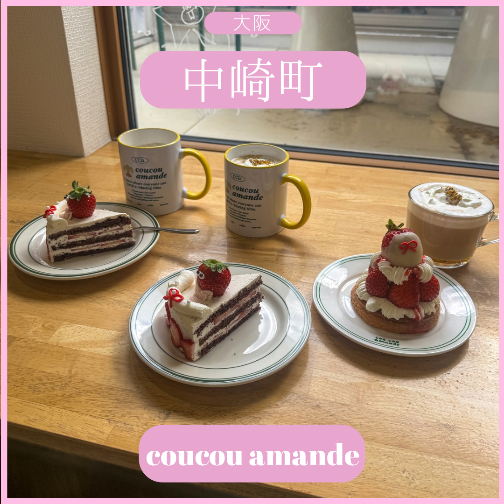
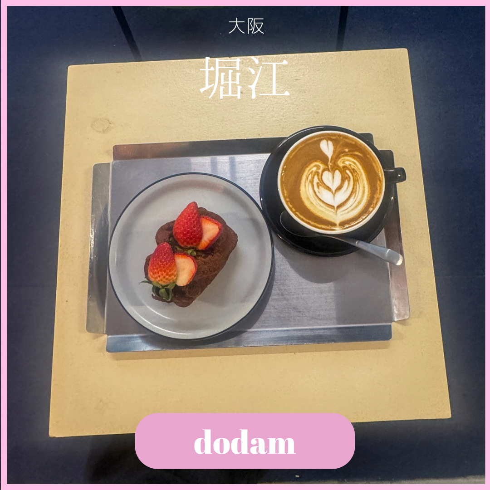
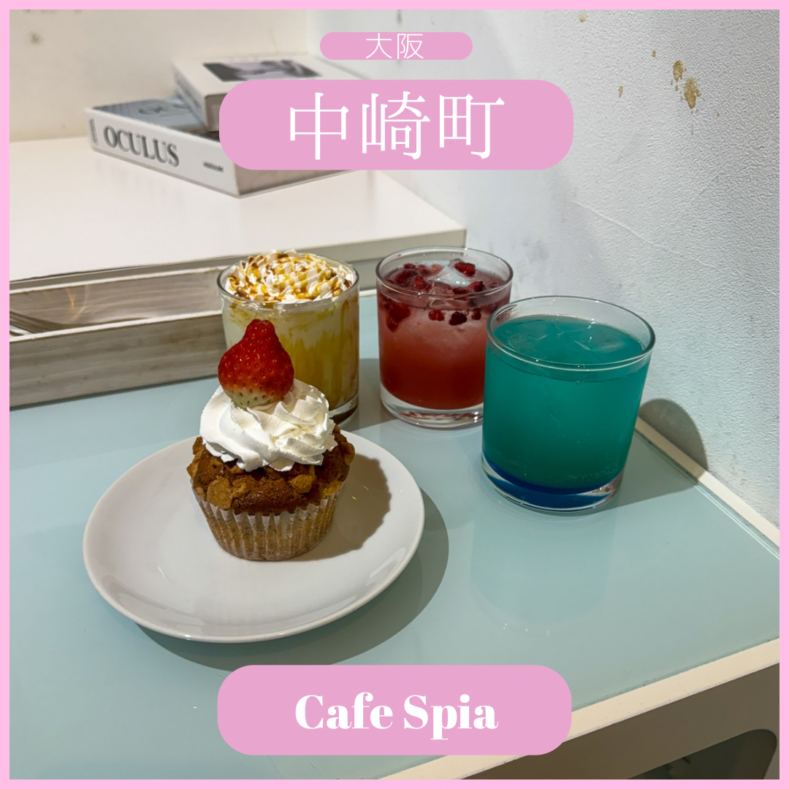
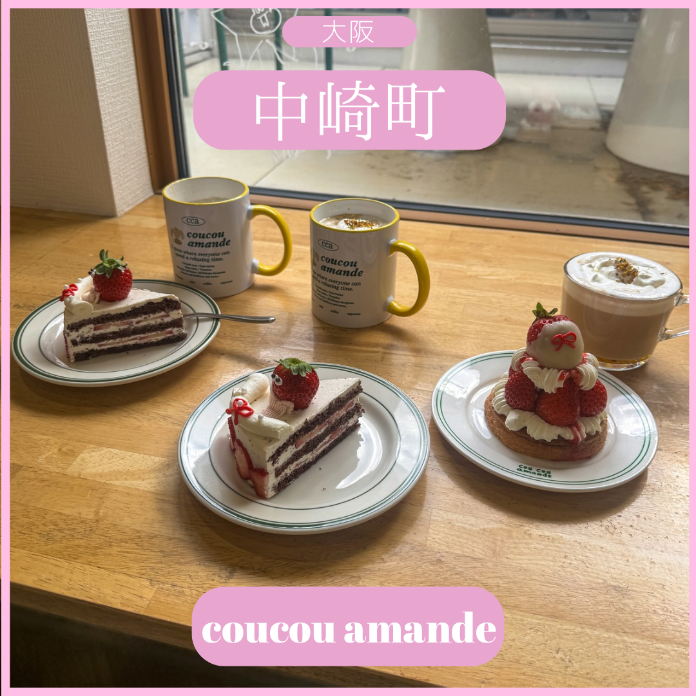
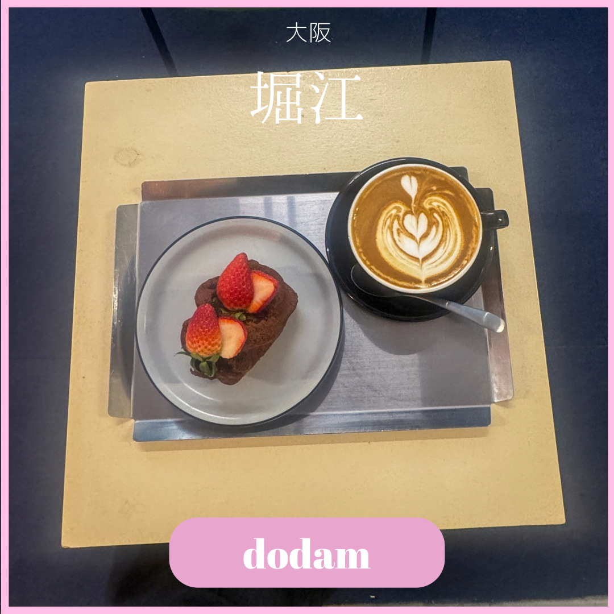
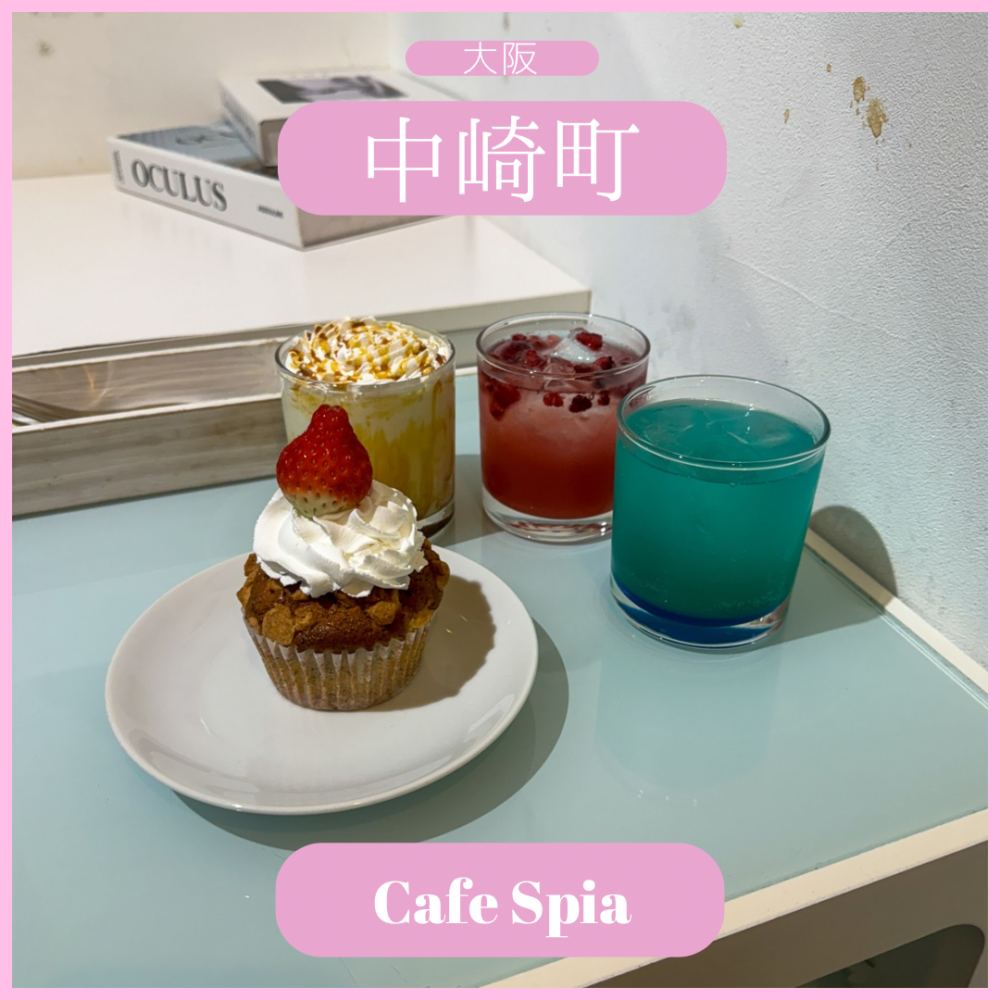

大阪のお洒落カフェ巡り
おすすめのカフェ
Vourke
広々として明るい店内。季節ごとに変わるフルーツを添えた、美味しいティラミスとふわふわふわふわのベニエが楽しめます。

OSA Coffee
チーズケーキとプリンが絶品の小さなモダンなお店。オーストラリア産のチョコを使用して、可愛い飛行機のラテアートが楽しめるカフェモカも見逃せません。

π Spectacle
夜遅くまで開いている、落ち着いた雰囲気のカフェ。もちもちの皮と、しっとりとした中のカヌレが最高に美味しい！
M&H Coffee
ポジティブなメッセージを持っている可愛い果物の編み物が飾られているお店で、美味しいフレーバラテを楽しめます。特に、金木犀ラテとレモンケーキがおすすめです。
インスタグラムのギャラリー
 



 







私について

「カフェ好きやけど、一人で行く自信がない、、」
どうやって一人でそんなにアクティブなの？」
「友達と遊ぶ予定ない時はなかなか家から出られない」
友達や周りの方からこういうコメントが多く、かなり考えさせられました
一人っ子で親のお仕事の転勤でよくお引越しをしていた私は、自然と一人で出かけることが多くなり、周りの目をあまり気にしなくなりました。でも、そういう経験がなかった方にどうやって同じような行動力を持ってもらえるかを考えたとき、カフェインスタを始めようと思いました。
一人でカフェに行って、お洒落な空間で美味しいケーキ食べる日常を見せて、カフェのお店の情報を伝えることで、フォロワーの誰かが「今日は一人でカフェ活してみよう！」と感じてもらえたら、それが私の成功だと思っています。
一緒にカフェ巡りを楽しみながら、皆さんが一人で訪れる自信を持つきっかけになれば嬉しいです！
問い合わせ
注意：現在、問い合わせフォームは無効です。個人情報は収集されていません。